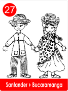
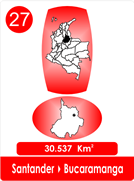
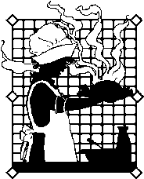

Cuentan que Rosalinda sabia bordar, tejer, y coser.
Pero nada de cocinar, no era sino que se acercara a una estufa o a cualquier fogón y la ampolla era segura, siempre acababa quemada ese era su complejo.
Un día conoció un joven al que llamaban, el Chacho, era un muchacho que además de bien parado, era el brazo derecho de Doña Rita, la mujer que aun siendo inválida hacía los mejores tamales que envolvía en hoja de chisgua.

Chacho la recogía en el campo, además ofrecía envueltos de maíz, y los protegían con amero, también vendía buñuelos, pasteles de arracacha y yuca.
Chacho no tenia inconveniente en venderlos de casa en casa, por encargos, o los Domingos al final de la Santa Misa.
Entonces Rosalinda decidió trasladarse donde la tía Magola, la experta en cocina, y aprender sus recetas en mermeladas, postres, galletas y bizcochos.
La primera lección fue prender un fogón de leña, parecía sencillo, pero le sacó muchas lágrimas, y ni los trapos en la cara, ni los trucos de Don Pancho le evitaba llorar, hasta que por fin, logró encenderlos!
Luego a reconocer yerbas, y lo mas difícil!
! Dar con el punto!
Nunca se imaginó que dar con el punto fuera cosa difícil, pero según la tía Magola, era la ciencia y el éxito e n cualquier cocina.
Pero entre todos los dulces que aprendió, cidra, brevas, uchuvas , arequipe , fresas , mandarina, mango, coco, piña, de icaco, el mejor y el mas difícil, era el de la guayaba!.
Magola sostenía que la fruta de gusanitos blancos, era la "curalotodo", curaba los males de estómago, diarreas de los niños, era ideal para emplastos en heridas, que además curaba la anemia y para mejorar las debilidades nerviosas.
Cierto día Rosalinda estaba batiendo la jalea de guayaba que se vendía como pan y por estar pensando en el Chacho, se le fué el famoso punto y la jalea se puso dura, para no perderla, la vació y lleno un molde al tope.

Por la tarde confesó y mostró su culpa y cual no sería su sorpresa, que al cortarlo con un cuchillo la tía exclamó, es el mejor Bocadillo de Guayaba.
Rosalinda dió con el Punto, se casó con su Chacho y en Vélez se establecieron y por fin consiguió su Diploma!